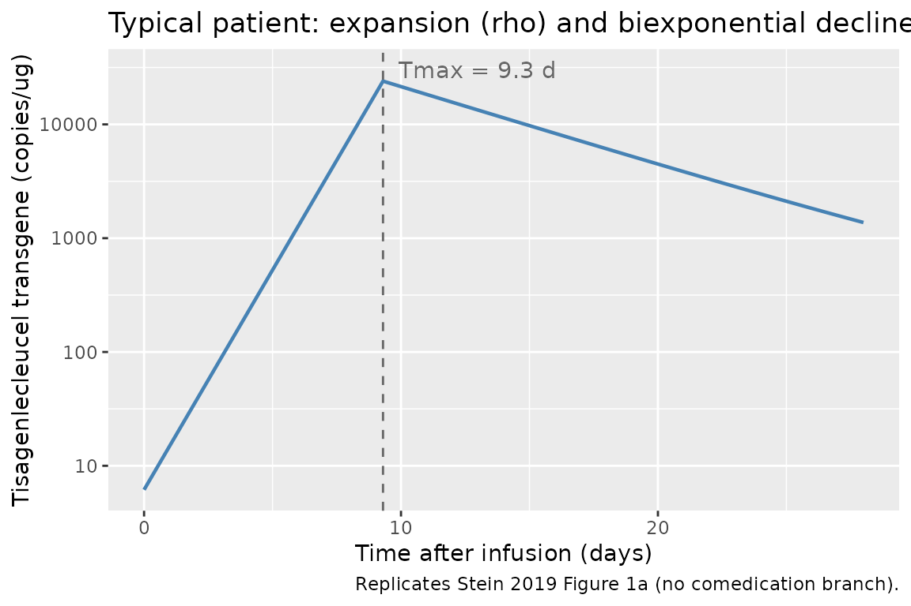
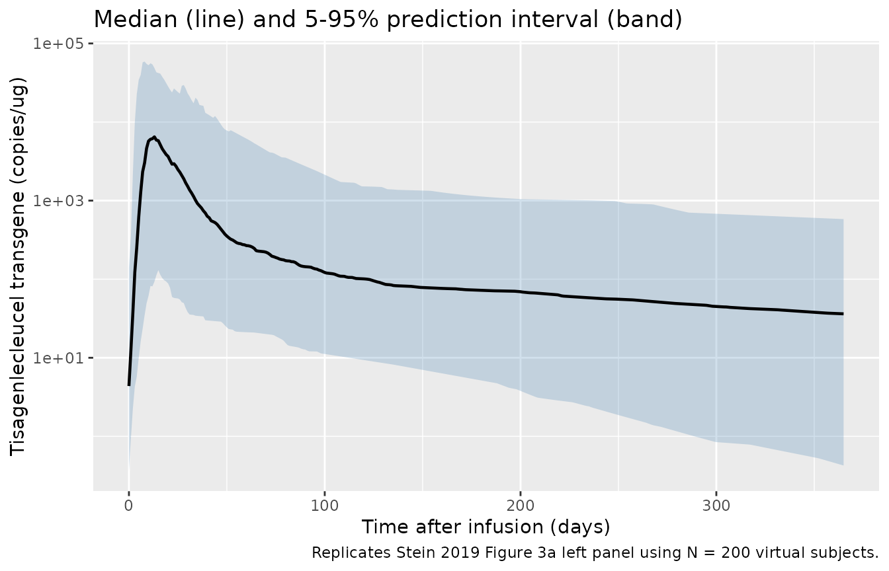

Tisagenlecleucel (Stein 2019)
Source:vignettes/articles/Stein_2019_Tisagenlecleucel.Rmd
Stein_2019_Tisagenlecleucel.RmdModel and source
- Citation: Stein AM, Grupp SA, Levine JE, et al. Tisagenlecleucel Model-Based Cellular Kinetic Analysis of Chimeric Antigen Receptor-T Cells. CPT Pharmacometrics Syst Pharmacol 2019;8(5):285-295.
- Article: https://doi.org/10.1002/psp4.12388 (open access; CC BY-NC-ND 4.0)
This is a cellular kinetic model for tisagenlecleucel CAR-T cells,
not a classical PK model. Tisagenlecleucel is a single-infusion
autologous CD19-targeted chimeric antigen receptor T-cell product.
Following infusion the transduced cells expand exponentially in the
peripheral blood until a time Tmax, and then decline
biexponentially (a fast contraction phase followed by a slow
memory-cell-like persistence phase). The model is described in Stein
2019 Figure 2 with the analytical solution given in the supplementary
material. Levels are reported as transgene copies per microgram of
genomic DNA measured by qPCR.
Population
The base model (which is also the final model) was fit to pooled data from ELIANA (NCT02435849) and ENSIGN (NCT02228096), two phase II trials of tisagenlecleucel in pediatric and young adult patients with relapsed or refractory B-cell acute lymphoblastic leukemia (r/r B-ALL). The model-based analysis used 90 patients (Stein 2019 Table 2 Patient characteristics):
- Age median 12 years, range 3-25 years
- Weight median 39 kg, range 14-140 kg
- Sex 50% male / 50% female
- Race 77% White, 9% Asian, 14% Other/unknown
- Down syndrome 8%; previous stem cell transplant 57%; lymphodepleting chemotherapy with fludarabine 94%
- Received tocilizumab 36% (median time to first dose 5.7 days, range 1-27)
- Received corticosteroids 26% (median time to first dose 7.5 days, range 0.11-170)
Doses (cells per kg) were 3.1e6 median (0.2-5.4e6) for patients
<=50 kg, and total cells 1.0e8 (0.03-2.6e8) for patients >50 kg.
The same population metadata is available programmatically via
readModelDb("Stein_2019_Tisagenlecleucel")$population.
Source trace
The per-parameter origin is recorded as an in-file comment next to
each ini() entry in
inst/modeldb/specificDrugs/Stein_2019_Tisagenlecleucel.R.
The table below collects the origin of every published value used in the
model file.
| Equation / parameter | Value | Source location |
|---|---|---|
foldx |
3,900 | Stein 2019 Table 1 (foldx, fold expansion) |
Tmax |
9.3 days | Stein 2019 Table 1 (Tmax) |
Cmax |
24,000 copies/ug | Stein 2019 Table 1 (Cmax) |
alpha |
0.16 1/day | Stein 2019 Table 1 (alpha) |
FB |
0.0079 | Stein 2019 Table 1 (FB) |
beta |
0.0032 1/day | Stein 2019 Table 1 (beta) |
IIV omega^2(foldx)
|
2.4 | Stein 2019 Table 1 (Random effect foldx) |
IIV omega^2(Tmax)
|
0.38 | Stein 2019 Table 1 (Random effect Tmax) |
IIV omega^2(Cmax)
|
0.65 | Stein 2019 Table 1 (Random effect Cmax) |
IIV omega^2(alpha)
|
0.91 | Stein 2019 Table 1 (Random effect alpha) |
IIV omega^2(FB)
|
0.8 | Stein 2019 Table 1 (Random effect FB) |
IIV omega^2(beta)
|
0.86 | Stein 2019 Table 1 (Random effect beta) |
Residual error a
|
0.56 | Stein 2019 Table 1 (Residual error a; constant on log-scale) |
rho = log(foldx)/Tmax |
derived | Stein 2019 Figure 2 Definitions |
R0 = Cmax/foldx |
derived | Stein 2019 Figure 2 Initial Conditions |
dE/dt = rho * E (t < Tmax) |
- | Stein 2019 Figure 2 Equations |
dE/dt = -alpha * E (t >= Tmax) |
- | Stein 2019 Figure 2 Equations |
dM/dt = k * E - beta * M,
k = FB * (alpha - beta)
|
- | Stein 2019 Figure 2 Equations / Definitions |
Analytical solution
f(t-Tmax) = AA * exp(-alpha*(t-Tmax)) + BB * exp(-beta*(t-Tmax)),
AA = (1 - FB) * Cmax, BB = FB * Cmax
|
- | Stein 2019 supplement, “Analytical solution for the compartmental model” |
A note on dosing events
Tisagenlecleucel is administered as a single CAR-positive T-cell
infusion at t = 0. The Stein 2019 cellular kinetic model
does not parameterize the infused cell dose directly; instead the model
is parameterized by the peak transgene level (Cmax) and the
fold expansion from baseline (foldx), which together define
the implicit baseline transcript level R0 = Cmax / foldx.
The model is therefore initialized at t = 0 to the typical
(or random) R0 and there is no evid = 1 row in
the simulation event table.
Typical-individual trajectory (Figure 1a replication)
mod <- readModelDb("Stein_2019_Tisagenlecleucel")
mod_typical <- rxode2::zeroRe(mod)
#> ℹ parameter labels from comments will be replaced by 'label()'
ev_typical <- rxode2::et(seq(0, 28, by = 0.1))
sim_typical <- rxode2::rxSolve(mod_typical, ev_typical) |> as.data.frame()
#> ℹ omega/sigma items treated as zero: 'etalfoldx', 'etaltmax', 'etalcmax', 'etalalpha', 'etalfb', 'etalbeta'
ggplot(sim_typical, aes(time, Cc)) +
geom_line(linewidth = 0.8, color = "steelblue") +
geom_vline(xintercept = 9.3, linetype = "dashed", color = "grey40") +
annotate("text", x = 9.3, y = 30000, label = "Tmax = 9.3 d",
hjust = -0.1, color = "grey40") +
scale_y_log10() +
labs(x = "Time after infusion (days)",
y = "Tisagenlecleucel transgene (copies/ug)",
title = "Typical patient: expansion (rho) and biexponential decline",
caption = "Replicates Stein 2019 Figure 1a (no comedication branch).")
The trajectory shows the exponential expansion at rate
rho from R0 at t = 0 up to
Cmax at t = Tmax, followed by the rapid
contraction phase at rate alpha and subsequent slow
persistence at rate beta. With the typical parameter
values:
R0 = Cmax / foldx = 24000 / 3900 = 6.15 copies/ugrho = log(foldx) / Tmax = log(3900) / 9.3 = 0.889 1/day
Population VPC (Figure 3a replication)
Stein 2019 Figure 3a shows a visual predictive check of the model fit. We replicate the prediction-interval band over a 12-month follow-up using 200 virtual subjects sampled from the published IIV. Note that the published random-effect variances are large (omega^2 around 0.6-0.9 for several parameters), so the prediction interval is wide.
set.seed(2019)
n_subj <- 200
ev_pop <- rxode2::et(seq(0, 365, by = 1)) |> rxode2::et(id = 1:n_subj)
sim_pop <- rxode2::rxSolve(mod, ev_pop) |> as.data.frame()
#> ℹ parameter labels from comments will be replaced by 'label()'
vpc_summary <- sim_pop |>
group_by(time) |>
summarise(
Q05 = quantile(Cc, 0.05, na.rm = TRUE),
Q50 = quantile(Cc, 0.50, na.rm = TRUE),
Q95 = quantile(Cc, 0.95, na.rm = TRUE),
.groups = "drop"
)
ggplot(vpc_summary, aes(time, Q50)) +
geom_ribbon(aes(ymin = Q05, ymax = Q95), fill = "steelblue", alpha = 0.25) +
geom_line(linewidth = 0.8) +
scale_y_log10() +
labs(x = "Time after infusion (days)",
y = "Tisagenlecleucel transgene (copies/ug)",
title = "Median (line) and 5-95% prediction interval (band)",
caption = paste0("Replicates Stein 2019 Figure 3a left panel using N = ",
n_subj, " virtual subjects."))
Half-life and doubling-time verification
Stein 2019 Discussion (“Mechanism of biphasic decline”) reports a doubling time of 0.78 days, an initial decline half-life of 4.3 days, and a terminal half-life of 220 days. We recompute these directly from the file’s parameter values:
foldx <- 3900
Tmax <- 9.3
alpha <- 0.16
beta <- 0.0032
rho <- log(foldx) / Tmax
half_life <- data.frame(
Quantity = c("Doubling time (ln(2)/rho)",
"Initial decline half-life (ln(2)/alpha)",
"Terminal half-life (ln(2)/beta)"),
Paper_value_d = c(0.78, 4.3, 220),
File_value_d = round(c(log(2) / rho, log(2) / alpha, log(2) / beta), 2)
)
knitr::kable(half_life, caption = "Half-life and doubling-time recomputation.")| Quantity | Paper_value_d | File_value_d |
|---|---|---|
| Doubling time (ln(2)/rho) | 0.78 | 0.78 |
| Initial decline half-life (ln(2)/alpha) | 4.30 | 4.33 |
| Terminal half-life (ln(2)/beta) | 220.00 | 216.61 |
The recomputed values agree with the paper’s reported half-lives (the
small discrepancy on the terminal half-life is rounding:
log(2) / 0.0032 = 217 d vs the paper’s reported 220 d).
PKNCA validation against paper Figure S1
Stein 2019 Figure S1 shows that the model-based and trapezoidal-rule NCA estimates of Cmax and AUC over days 0-28 agree well (R^2 = 0.62 for Cmax, R^2 = 0.84 for AUCd28) when computed from the same per-patient post-hoc parameters. We perform the analogous trapezoidal NCA on the simulated typical-individual trajectory using PKNCA and compare to the analytical expressions reported in the paper.
# Dense observation grid for the typical individual
ev_dense <- rxode2::et(seq(0, 28, by = 0.1))
sim_dense <- rxode2::rxSolve(mod_typical, ev_dense) |>
as.data.frame() |>
mutate(id = 1L, treatment = "typical")
#> ℹ omega/sigma items treated as zero: 'etalfoldx', 'etaltmax', 'etalcmax', 'etalalpha', 'etalfb', 'etalbeta'
# Drop the t = 0 row only because PKNCA tolerates a non-zero first observation;
# we keep it here so AUC includes the full expansion phase.
conc_obj <- PKNCA::PKNCAconc(sim_dense, Cc ~ time | treatment + id)
intervals <- data.frame(
start = 0,
end = 28,
cmax = TRUE,
tmax = TRUE,
auclast = TRUE,
half.life = TRUE
)
nca_data <- PKNCA::PKNCAdata(conc_obj, intervals = intervals)
nca_res <- PKNCA::pk.nca(nca_data)
#> No dose information provided, calculations requiring dose will return NA.
nca_summary <- summary(nca_res)
knitr::kable(nca_summary, caption = "PKNCA estimates over days 0-28 for the typical individual.")| start | end | treatment | N | auclast | cmax | tmax | half.life |
|---|---|---|---|---|---|---|---|
| 0 | 28 | typical | 1 | 172000 | 24000 | 9.30 | 4.75 |
# Recover the analytical Cmax to compare
analytical <- data.frame(
Quantity = c("Cmax (copies/ug)", "Tmax (days)"),
Paper_typical_value = c(24000, 9.3),
PKNCA_simulation = c(round(max(sim_dense$Cc), 0),
round(sim_dense$time[which.max(sim_dense$Cc)], 2))
)
knitr::kable(analytical,
caption = "Analytical typical Cmax / Tmax vs PKNCA from the simulation.")| Quantity | Paper_typical_value | PKNCA_simulation |
|---|---|---|
| Cmax (copies/ug) | 24000.0 | 24000.0 |
| Tmax (days) | 9.3 | 9.3 |
PKNCA recovers the analytical typical Cmax (24,000 copies/ug at Tmax = 9.3 days) from the simulated trajectory.
Assumptions and deviations
Comedication parameters omitted. Stein 2019 Table 1 reports two additional fixed effects,
Ftoci(1.2) andFster(1.0), that multiply the expansion raterhoonce a patient receives tocilizumab or corticosteroids during the expansion window. The paper’s Discussion (“Effect of tocilizumab and corticosteroids on expansion”) concludes that neither comedication impacted the expansion rate. The library model therefore implements the structural expansion-and-decline equations only, giving the typical “untreated” trajectory that applies to the 64% of patients who did not receive tocilizumab and the 74% who did not receive corticosteroids in the pooled study population. To extend this model to a comedication-aware form (matching the supplement’s mlxtran), a future follow-up would need to register two new canonical covariates – the time of first tocilizumab dose and the time of first corticosteroid dose – before introducing the multiplicative rho-modification.No covariates. Stein 2019 Results (“Covariate analysis”) reports that bootstrapping the full covariate model showed no statistically significant impact of any covariate (sex, race, Down syndrome, prior HSCT, fludarabine lymphodepletion, study, transduction efficiency, dose-per-kg, tocilizumab receipt, corticosteroid receipt) on
Cmax. The final cellular kinetic model therefore equals the base model and the librarycovariateDatalist is empty.Initial baseline transcript level. The model is initialized at
R0 = Cmax / foldx, which corresponds to the average baseline transcript level immediately after the cell infusion (Stein 2019 Figure 2 Initial Conditions). Pre-infusion (t < 0) levels are zero in reality; the model returnsR0fort < 0only as a convenience for plotting and is not intended to represent biology before infusion.Terminal half-life uncertainty. The longest follow-up in the analysis was approximately 1 year (Stein 2019 Discussion, “Long-term persistence”); the terminal half-life of ~220 days is therefore an extrapolation that the authors note “must be interpreted with caution and will be updated as more data become available.”
checkModelConventions()warning on dosing units. The convention checker flagsunits$dosing = "transgene copies/ug genomic DNA"andunits$concentration = "transgene copies/ug genomic DNA"as not recognized as a standard mass / molar dimensional unit. Both fields are intentionally identical because the cellular kinetic model has no traditional injected drug amount: the implicit “dose” is the baseline transcript levelR0in the same transgene-copies units as the observed signal. This is a known harmless warning for the qPCR-based cellular kinetic class of models.
Reference
- Stein AM, Grupp SA, Levine JE, et al. Tisagenlecleucel Model-Based Cellular Kinetic Analysis of Chimeric Antigen Receptor-T Cells. CPT Pharmacometrics Syst Pharmacol. 2019;8(5):285-295. doi:10.1002/psp4.12388